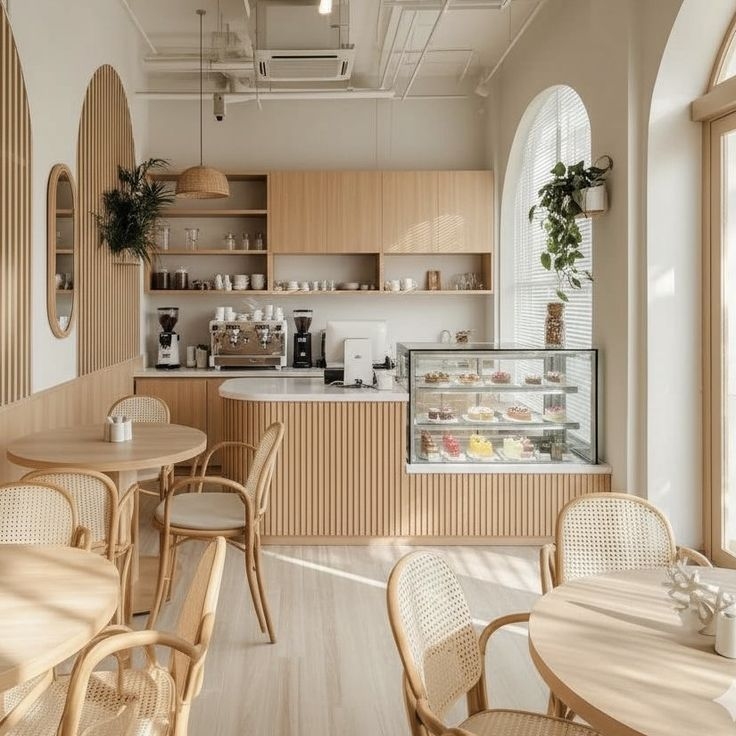

HISTORI
The Thirty‑Six Cafe first opened its doors in 2013 in Medan, North Sumatra. The name “Thirty‑Six” carries special meaning: the number 36 represents the total months the founders spent developing the concept, raising capital, and making all necessary preparations before the cafe was finally launched. It was also chosen as a reference to its original location address: Jalan Setia Budi No. 36.
In the beginning, the cafe was a modest space with seating for roughly 25 guests, built around the idea of being “a warm, welcoming home for coffee lovers.” With backgrounds in culinary arts and business management, the founders envisioned more than just a place serving coffee and meals — they aimed to create a gathering spot where people could connect, share ideas, and nurture creativity within the local community.

SUSTAINABILITY
At The Thirty‑Six Cafe, we uphold sustainability principles by maintaining a balanced commitment to business quality, environmental stewardship, and community benefit. Environmentally, we prioritize responsibly sourced ingredients — for example, coffee beans purchased directly from local farmers who use eco‑friendly cultivation practices. We also manage waste through proper sorting and actively reduce the use of single‑use items. Economically, we build long‑term partnerships with regional suppliers to support local economic growth while securing a stable supply chain, all while upholding consistent product quality to remain relevant and ensure our business thrives long‑term. Socially, our cafe serves as a gathering space for community activities, we champion local arts and culture, and we strive to create meaningful positive impact for people in our surroundings.
CAREERS
At The Thirty‑Six Cafe, we view work not merely as a job, but as an opportunity to learn and grow together. We provide a comfortable, fair, and supportive workplace where every team member is valued and given room to develop skills — such as coffee brewing, food preparation, and customer service. Open roles include kitchen staff, pastry team members, servers, and operations management. We keep requirements open to anyone with passion, a friendly attitude, and willingness to learn — regardless of educational background or prior experience. Alongside fair pay, our employees also enjoy benefits such as free meals, product discounts, and promotion opportunities based on performance.